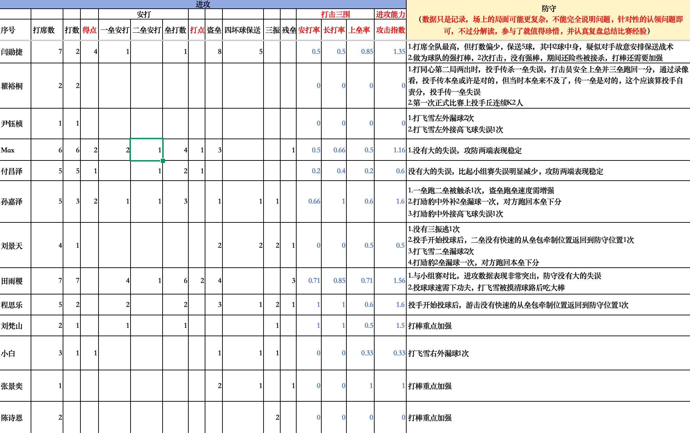
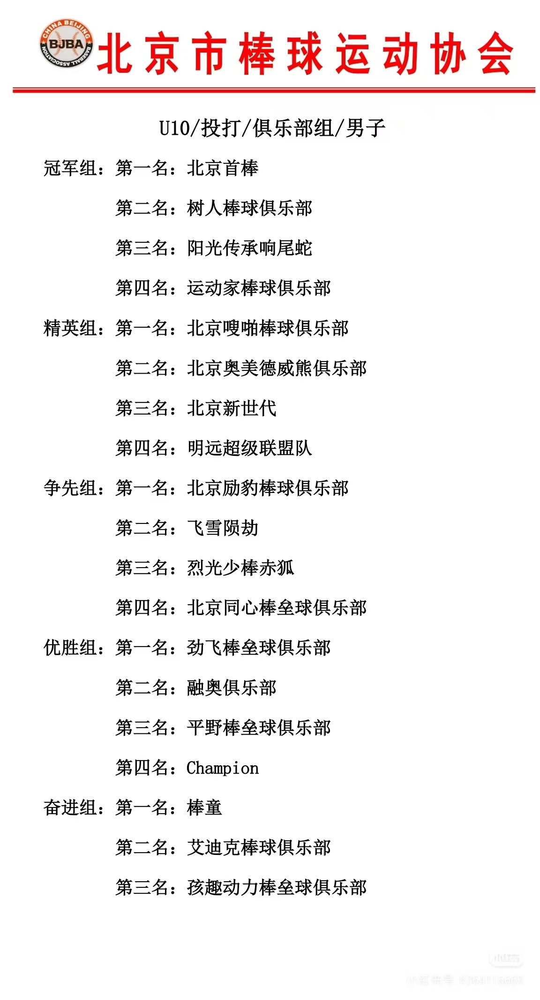

比赛数据概览


- 烈光少棒赤狐 vs 北京励豹棒球俱乐部：3 : 2（胜）
- 烈光少棒赤狐 vs 飞雪陨劫：3 : 4（负）
- 烈光少棒赤狐 vs 北京同心棒垒球俱乐部：10 : 2（胜）
三AI共识总结
- 进攻端：闫勋捷被对手重点保送针对，但田雨稷、程思乐、孙嘉泽等第二梯队高效输出，展现了“整队赢球”的雏形
- 防守端：比小组赛更稳，没有全面崩盘，但外野高飞球判断、内野牵制后快速回位仍是青少年球队的典型短板
- 改进方向：外野高飞球专项训练、二游牵制回位纪律、后段棒次打击强化
1. 进攻端：真实情况是"两极分化"与"战术保送"
球队的火力并不像我之前误读的那样全员开花，而是高度集中在个别几名核心球员身上，并且对手的针对性防守非常明显。
真正的"安打王"与 MVP —— 田雨稷
- 他才是这场比赛进攻端最亮眼的明星。7个打数击出5支安打（4支一垒安打，1支二垒安打），贡献了全队最高的 6个垒打数 和 2分打点，攻击指数 (OPS) 高达 1.56。
- 教练备注对他给予了极高评价："进攻数据表现非常突出，防守没有大的失误"。
被对手"重点关照"的威慑力 —— 闫勋捷
- 我之前完全看错了他的数据。他有多达 7 次打席，但只有 2 个真实打数。为什么？因为他获得了惊人的 5 次四坏球保送（备注指出其中2球是触身球，疑似被对手故意安排战术保送）。
- 对手宁愿保送他也不让他打。他利用保送上垒后，跑出了极其恐怖的 8 次盗垒，并跑回了 4 分。不过教练也犀利地指出，他在仅有的2次真实打击中"没有强棒"，打击力量还需要加强。
高效率的输出点 —— 程思乐 & 孙嘉泽
- 程思乐：效率极高，2 个打数 2 支安打，包揽了全队最多的 3 分打点，是关键时刻能送回队友的利器（OPS 1.6）。
- 孙嘉泽：3 个打数 2 支长短打（OPS 1.6），也是核心火力点。
稳健的基石 —— Max 与 付昌泽
- 两人包揽了大量的打席，且都被教练备注了"没有大的失误，攻防两端表现稳定"。
- 付昌泽更是被重点表扬"比起小组赛失误明显减少"。
2. 防守端：暴露出青少年球队的典型"通病"
上一回合我误以为防守问题解决了，但清晰的备注表明，防守端的隐患依然很大，主要集中在外野接球和内野补位意识上，这非常符合青少年棒球梯队（如虎杯赛事常见年龄段）的发展特征。
外野"高飞球"与地滚球梦魇
- 左外野的 尹钰桢（漏球2次，高飞球失误1次）。
- 中/右外的 孙嘉泽（补2垒漏球导致对手回本垒得分，高飞球失误1次）。
- 右外野的 小白（漏球1次）。
外野对球的落点判断、接高飞球的基本功是这支球队目前最大的防守漏洞。
内野"无球跑动"与牵制补位意识不足
- 备注中敏锐地指出了游击手（程思乐）和二垒手（刘景天）的共同问题："投手开始投球后，没有快速的从垒包牵制位置返回到防守位置"。
- 这说明内野手在配合投手牵制跑者后，防守站位的复原太慢。一旦打者击出内野地滚球，他们将无法及时处理，这是非常高阶的球商和防守纪律问题。
投捕与场上决策
- 瞿裕桐 虽然有传一垒失误导致丢分的情况，但教练明确肯定了他的决策："传一垒是对的，这个应该算投手自责分"，并且表扬了他第一次正式比赛上投手丘就连续 K 掉两人。
- 田雨稷 虽然打击完美，但投手丘上"球速需下功夫，打飞雪被摸清球路后吃大棒"，说明球威不足容易被对手逮中。
总结与复盘建议
重新看这份数据，这支球队的画像非常清晰：
这支队伍拥有 田雨稷、闫勋捷、Max、程思乐 这样极其出色的核心球员，进攻端足以撕裂对手。对手甚至忌惮到对闫勋捷采取连续战术保送。
但在接下来的日常训练中，球队迫切需要解决以下问题：
- 外野特训：必须增加外野高飞球的判断与接捕训练，外野的失误在比赛中往往就是致命的长打和丢分。
- 内野防守纪律（重点）：教练需要重点演练二游（二垒手和游击手）在牵制配合后的迅速归位，培养球员的"无球跑动"意识。
- 部分球员的打击强化：备注中多次出现"打棒重点加强"（针对刘梵山、张景奕、陈诗恩等后段棒次），球队需要提升整体打线的深度，避免火力只集中在前几棒。
这张决赛数据比前一张更有价值，因为它说明的不是"能不能打"，而是关键战里能不能按赢球方式去打。
整体看，这是一场成熟度更高的比赛
按表里能直接看出来的数据，球队大概打出了：
- 31打数 15安打
- 10分
- 11次保送/赠送上垒
- 24次盗垒
这组数据最说明问题的不是安打数，而是：你们不是靠一两个长打赢，而是靠"上垒 + 跑垒 + 逼失误 + 连续推进"赢。这在决赛里尤其重要，因为决赛对手通常会先掐你最强的点。
进攻端：核心被针对了，但对手还是没按住
1）闫勋捷是这场最关键的"节奏点"
他这场最特别的不是打数，而是：
- 7打席，只有2打数
- 5次保送/触身
- 8次盗垒
- 4得分
- 上垒率 0.85
这已经很像"对方在绕着他打"了。说明对手很清楚：不能轻易给他正常对决。但真正厉害的是，虽然他被限制了正式打击机会，他还是靠上垒和盗垒把比赛节奏改掉了。这类球员在决赛里价值特别大，因为他不一定非得靠安打才能决定比赛。
2）真正把决赛打开的，是第二梯队接上来了
这张表最亮的地方，不是只有闫，而是后面有人接住了。几个最突出的点：
- 田雨稷：7打数，4个一垒安打 + 1个二垒安打，2打点，4盗垒，攻击指数1.56。这是非常硬的决赛输出，属于"别人保送核心，你来补刀"的类型。
- 孙嘉泽：3打数里有1个一垒安打 + 1个二垒安打，2得分，攻击指数1.6。爆发力很强。
- 程思乐：2打数2安，攻击指数1.6。样本不大，但效率极高。
- Max：6打数3安，还有二垒安打，攻防都稳，属于决赛里最让教练放心的类型。
3）这场进攻不像"乱冲"，而是有体系的
从数据看，你们这场不是纯乱跑，是真的在做持续施压：
- 有高上垒
- 有盗垒转化
- 有中后段补刀
- 有角色球员贡献推进
比如张景奕虽然打击样本不多，但也能贡献上垒和盗垒；小白有得分；刘梵山 1打数1安。这些边角贡献，放在决赛里都很值钱。
防守端：比前面稳了，但细节还是决定上限
这张表右边的备注其实很诚实：大问题少了，但细节问题还在。
先说好的
几个点是明显稳定的：
- Max：备注里直接写了"没有大的失误，攻防两端表现稳定"
- 付昌泽：比小组赛失误明显减少，攻防都更稳
- 田雨稷：备注也是"防守没有大的失误"
- 瞿裕桐：第一次正式比赛上投手丘，连续K2人，这个是亮点
这说明到了决赛，至少有几个人已经能把球打成"正常球"，这很重要。
再说真正还要补的
这场的防守问题，主要集中在三类。
第一类：外场处理球
- 尹钰桢这边有左外漏球、接高飞失误
- 孙嘉泽有中外接高飞失误
- 小白有右外漏球
这说明外场最该补的，不是"能不能碰到球"，而是：第一步判断、接球动作、接完以后别继续送。决赛里外场一漏，伤害通常比平时大。
第二类：补位和轮转意识
- 投手开始投球后，游击没有快速从包夹/牵制位置回防
- 触击局面后的补位和回位不够快
- 有漏接、漏球后造成对手回本垒拿分
这类球不是手不行，是比赛意识和站位纪律的问题。而且这类问题到了更强级别的比赛，会被持续点名。
第三类：个别基础细节
- 刘景天有遗漏第三好球
- 孙嘉泽有一次一垒跑二垒被触杀，备注直接说"盗垒速度需增强"
- 还有个别球员备注是"打棒重点加强"
这些都不是大崩盘问题，但都是决定你们能不能再往上走的问题。
这场决赛最值得高看的地方
不是谁刷了最好看的一行数据，而是下面这件事：
对手已经明显在按你们的核心点了，但你们还是能靠阵容深度、推进能力和整体执行把比赛打下来。这比小组赛单纯"数据好看"更重要。
因为决赛最怕的是：
- 核心被锁死
- 后面接不上
- 一乱就崩
而你们这张表反映出来的是：
- 核心被限制了，但仍然制造巨大压力
- 第二梯队站出来了
- 防守虽然有瑕疵，但没出现全面崩盘
这就是成长。
我会这样给这场决赛下评价
| 奖项 | 球员 | 理由 |
|---|---|---|
| 进攻MVP | 田雨稷 | 决赛里最硬的纯输出点之一，安打质量和持续性都很好 |
| 比赛节奏MVP | 闫勋捷 | 虽然打数少，但他是整场最能改变对方防守和投球选择的人 |
| 最稳的定海针 | Max | 数据稳定，防守备注也稳，这种球员在决赛里特别值钱 |
| 惊喜点 | 程思乐、孙嘉泽 | 效率很高，说明不是只有主力核心能扛 |
下一步最该练的，不是"更猛"，而是"更稳"
如果按这张决赛表往后推，我会抓4件事：
- 外场基本功：地滚球处理、高飞球判断、接球后第一传。
- 触击和牵制后的回位轮转：这个补上，能少送很多分。
- 投手与内场的节奏配合：尤其是投手出手后，内野站位和补位的纪律性。
- 个别球员的打棒加强：决赛里不是每个人都要猛打，但至少不能轻易丢打席。
这是 烈光少棒（赤狐队）决赛数据 的深度分析。与小组赛相比，决赛的竞争更激烈，对手针对性更强，我会从进攻效率、防守稳定性和关键失误三个维度为您拆解：
🏆 决赛进攻数据分析
攻击指数排名（综合打击贡献）
| 排名 | 球员 | 打席 | 安打率 | 长打率 | 上垒率 | 攻击指数 | 关键表现 |
|---|---|---|---|---|---|---|---|
| 🥇 | 孙嘉泽 | 5 | .600 | 1.00 | .600 | 1.6 | 得点2，二垒安打1，攻击效率最高 |
| 🥈 | 程思乐 | 5 | .400 | 1.00 | .600 | 1.6 | 长打能力突出 |
| 🥉 | 田雨稷 | 7 | .714 | .857 | .714 | 1.56 | 全队安打王（4支），与小组赛相比爆发 |
| 4 | 闫勋捷 | 7 | .500 | .500 | .833 | 1.35 | 被故意保送5次（2中身），打棒选择需加强 |
| 5 | 刘梵山 | 2 | .500 | 1.00 | .500 | 1.5 | 样本小但效率高 |
| 6 | Max | 6 | .500 | .667 | .500 | 1.16 | 二垒安打1，攻防稳定 |
进攻战术分析
- 田雨稷 决赛大爆发：7打席5安打（4支一垒+1支二垒），与小组赛相比"进攻数据表现非常突出"
- 付昌泽 稳定性提升：虽然攻击指数0.6不高，但"比起小组赛失误明显减少"
- Max 继续扮演稳定器角色，攻防两端无大失误
- 闫勋捷 被对手针对：7打席中5次保送（含2次触身），疑似对手执行"故意保送强打"战术，2次实际打击还险些被接杀，打棒侵略性需加强
- 刘景天 攻击指数0.5：4打席1安打，三振2次，打击状态低迷
- 小白、张景奕、陈诗恩 打击贡献偏低，陈诗恩2打席0安打2三振，打棒基本功急需加强
🧤 决赛防守数据深度分析
重大防守失误统计（直接导致失分或险情）
| 球员 | 位置 | 失误类型 | 后果 | 严重程度 |
|---|---|---|---|---|
| 瞿裕桐 | 投手 | 传一垒失误 | 对方安全上垒并跑回一分 | 🔴高 |
| 孙嘉泽 | 中外 | 补二垒漏球 | 对方跑回本垒下分 | 🔴高 |
| 孙嘉泽 | 中外 | 高飞球失误 | 局面延续 | 🟡中 |
| 刘景天 | 二垒 | 漏球×2次 | 对方跑回本垒下分 | 🔴高 |
| 刘景天 | 二垒 | 牵制后回位慢 | 防守失位 | 🟡中 |
| 尹钰桢 | 左外 | 漏球×2次 | 局面延续 | 🟡中 |
| 尹钰桢 | 左外 | 高飞球失误×1次 | 出局变安打 | 🟡中 |
| 小白 | 右外 | 漏球×1次 | 局面延续 | 🟢低 |
| 程思乐 | 游击 | 牵制后回位慢 | 防守失位 | 🟡中 |
防守表现分级
- Max："没有大的失误，攻防两端表现稳定"
- 田雨稷："防守没有大的失误"，投球球速需加强但控球尚可
- 付昌泽：比小组赛明显进步，防守稳健
- 孙嘉泽：一垒跑二垒被触杀（跑垒判断），中外补位漏球导致失分（位置感）
- 刘景天：二垒漏球2次直接导致失分，且"牵制后没有快速回防守位置"（专注力/习惯问题）
- 尹钰桢：飞雪左外漏球2次 + 高飞球失误1次，左外野防守成为对手攻击目标
- 瞿裕桐：投手关键传球失误导致失分
📊 小组赛 vs 决赛 对比分析
进步明显的球员
- 田雨稷（进攻端蜕变）
- 小组赛：5打席1安打，表现一般
- 决赛：7打席5安打4得点，攻击指数1.56，成为决赛MVP级别表现
- 付昌泽（稳定性提升）
- 小组赛：游击位置掉手套球、回传失误、盗垒被触杀2次
- 决赛："没有大的失误，比起小组赛失误明显减少"，心理调整能力强
状态下滑/被针对的球员
- 闫勋捷（被战术针对+打棒选择）
- 小组赛：8打席6安打4得点，统治级表现
- 决赛：7打席仅2打数（5次保送），实际打击险些被接杀，需要学会应对"被保送战术"，减少勉强挥棒
- 刘景天（攻防两端低迷）
- 小组赛：6打席2安打，投手K掉3人
- 决赛：4打席1安打2三振，投手表现未记录，但二垒防守漏球导致失分
- 孙嘉泽（防守问题放大）
- 小组赛：捕手漏球问题严重（3次漏球+掉球）
- 决赛：改守中外仍有补位漏球+高飞球失误，跑垒被触杀
🎯 决赛总结与针对性建议
🏅 决赛表现评级
| 等级 | 球员 | 评价 |
|---|---|---|
| S | 田雨稷 | 决赛真大腿，攻防一体无短板 |
| A | Max、程思乐、付昌泽 | 稳定输出，决赛心态好 |
| B | 孙嘉泽、闫勋捷、刘梵山 | 有贡献但有关键失误或被针对 |
| C | 瞿裕桐、刘景天、小白 | 存在明显技术/判断问题 |
| D | 尹钰桢、张景奕、陈诗恩 | 防守或打击有严重短板需重点训练 |
🎖️ 关键改进指令
- 二垒/游击牵制后回位：刘景天、程思乐共2次"牵制后没有快速从垒包牵制位置返回到防守位置"，这是防守意识问题，必须养成"牵制→快速回位"的肌肉记忆
- 外野高飞球：尹钰桢、孙嘉泽共2次高飞球失误，需加强外野高飞球判断训练（判断落点+接球手法）
- 内野传球：瞿裕桐作为投手，"传一垒"这种基础传球失误直接失分，压力下的基础传球需加练
- 闫勋捷：被保送时不要勉强打击，学会接受保送并利用盗垒（8次盗垒能力）制造压力，但"险被接杀"说明挥棒选择差，要加强选球眼力
- 刘景天、陈诗恩：攻击指数0.5和0，打击基本功需单独加练，建议增加T架训练和抛打训练量
- 小白：3打席1安打，且防守漏球，攻防两端都需加强